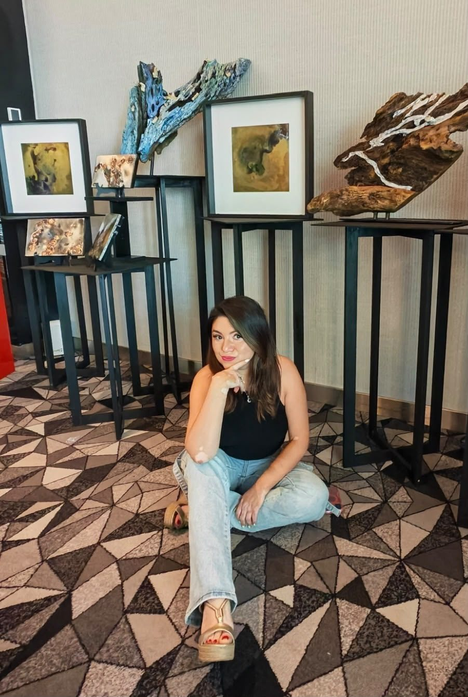
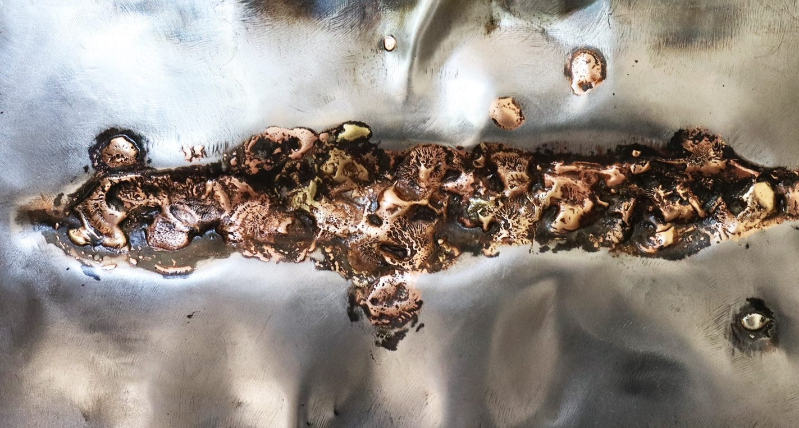

Puebla, 1984
Dejó la publicidad después de ver a Van Gogh en Ámsterdam. Encontró en el metal una voz.
Luisa Lozada, nacida en Puebla en 1984, descubrió su vocación artística tras un viaje a Europa, donde la obra de Van Gogh en Ámsterdam la inspiró a dejar la publicidad y dedicar su vida al arte como medio de transformación.
Aprendió diversas técnicas tradicionales, cubriendo desde la pintura acrílica, el óleo y la acuarela, pero en la joyería fue donde encontró un lenguaje auténtico. Con disciplina se formó con maestros orfebres y descubrió en los metales un medio de expresión personal. El metal, el vidrio, la madera y el fuego se convirtieron en herramientas fundamentales para su trabajo, como medio de declaración para expresar el contraste de la existencia: fuerza y vulnerabilidad, amor y angustia, belleza y caos.
El proceso es sensible y visceral: la flama no solo modela el metal, sino que representa la catarsis, un acto emocional de revelación. A través de un trabajo manual encuentra el equilibrio entre lo constructivo y lo destructivo, entre lo emocional y lo material.
Su trabajo combina la búsqueda artística y el trabajo personal. A través de piezas que evocan la esperanza, la memoria y el dolor, transmite su visión poética y emocional de la fragilidad humana. Sus obras muestran la fusión del fuego con aleaciones que generan colores y formas que hablan acerca de la resiliencia y la transformación. Su arte combina el silencio y la tempestad interior, creando universos sensibles donde coexisten la luz y la melancolía.
Ha hecho del metal su voz, un refugio y un medio de conexión con aquellos que la rodean. Mediante este transforma lo cotidiano en arte, lo rígido en belleza y el dolor en posibilidades. En sus manos los materiales cobran vida, al igual que nombra aquellas emociones que no podría con sus propias palabras.
- MaterialesMetal · vidrio · madera · fuego
- SeriesDespués del ruido · Efímero · Transmutación · Resiliencias
- Instagram@luisa_lozada_arte
Hablemos de obra, exhibiciones o encargos
Correoluisa24lozada@gmail.com Teléfono+52 221 326 0040 Instagram@luisa_lozada_arte